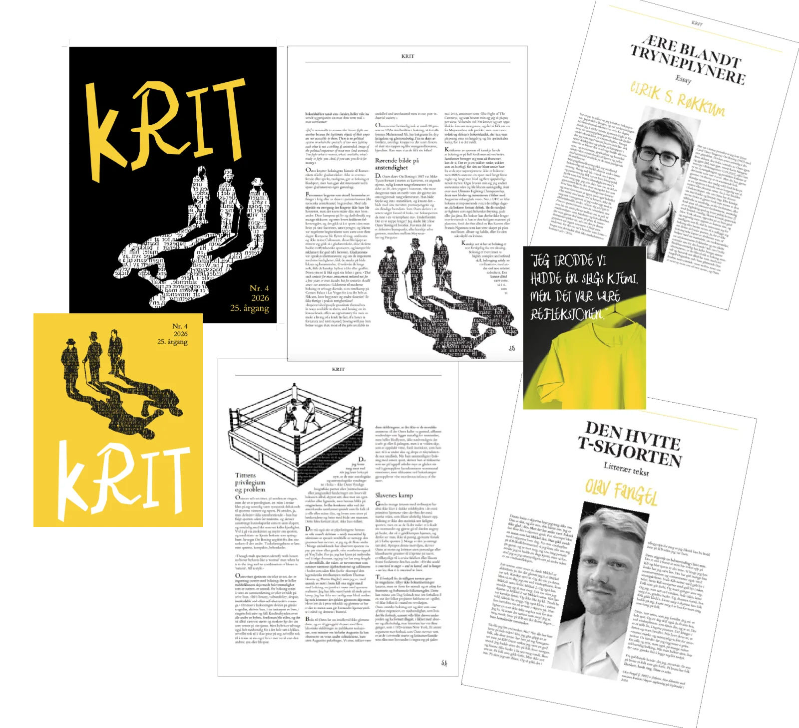
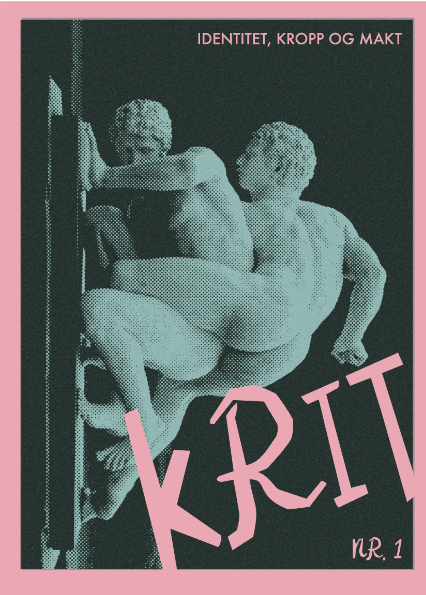
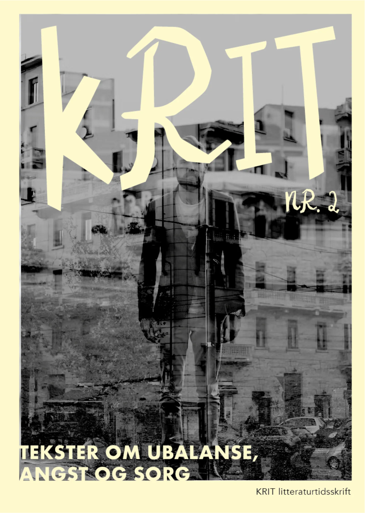
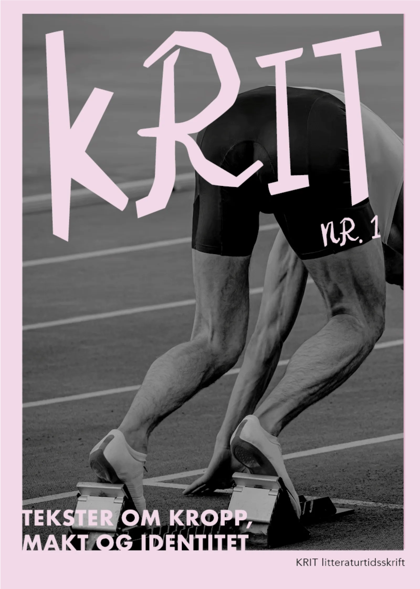
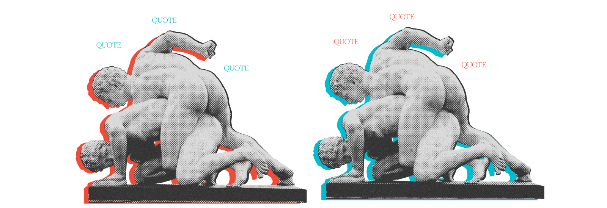
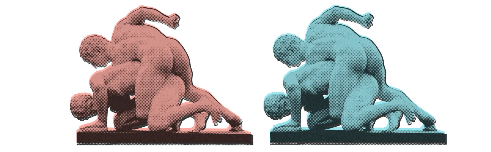
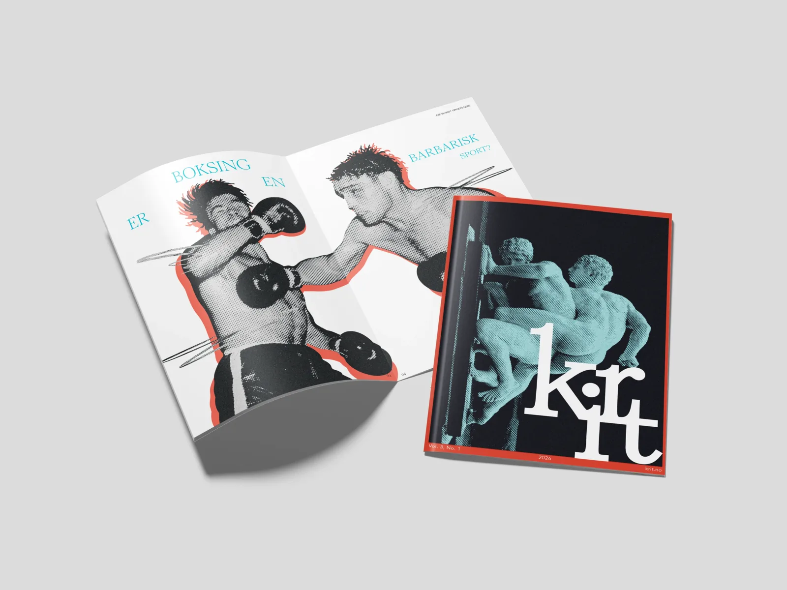
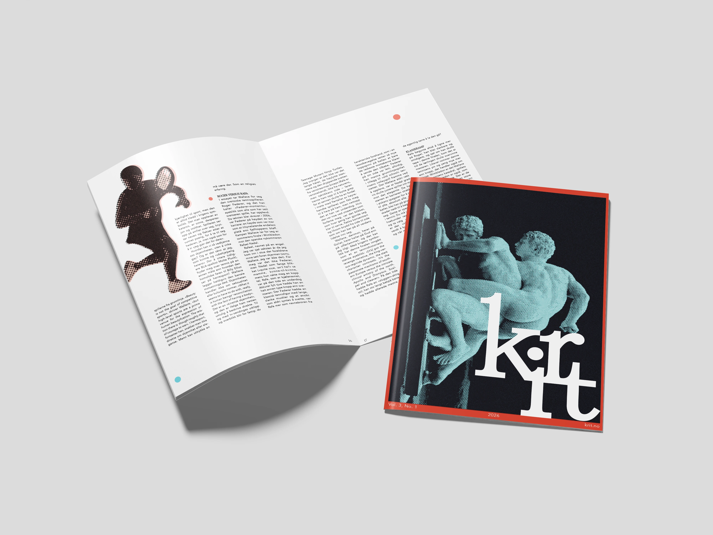
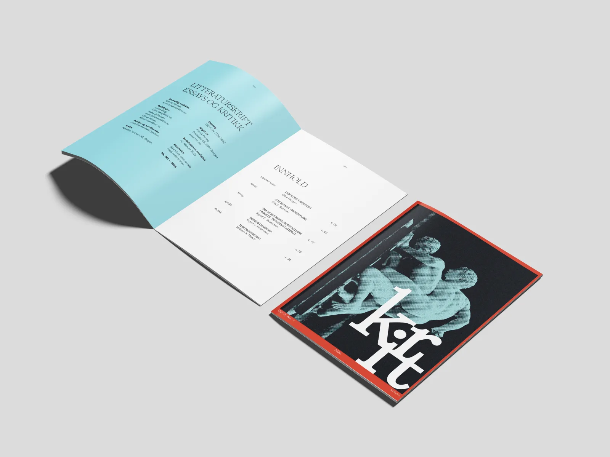

Krit litteraturtidsskrift
KRIT er et litteraturtidsskrift designet for å gi litterære tekster en tydelig og helhetlig visuell identitet. Prosjektet utforsker hvordan redaksjonell design kan løfte innholdet – og ikke bare ramme det inn.
Kontrasten som system
Designkonseptet tar utgangspunkt i kontrasten mellom det strukturerte og det ekspressive. Et strengt gridbasert oppsett brytes bevisst av visuelle grep som halftone-raster, sterke primærfarger og store typografiske kontraster.
Målet var ikke bare å lage et magasin som ser bra ut – men et visuelt system som holder over tid. Hvert designvalg ble begrunnet ut fra innholdet det skulle formidle.
Designet skal forsterke stemningen i tekstene – ikke konkurrere med dem.
Hvem er KRIT for?
KRIT er rettet mot lesere med interesse for norsk og internasjonal litteratur – studenter, akademikere og kulturinteresserte. Magasinet kombinerer essay, litterær tekst og kritikk, og henvender seg til en leser som setter pris på både innholdets dybde og formens bevissthet.
Leserens forventning er et magasin som oppleves gjennomtenkt og ambisiøst. Designet skal underbygge magasinets redaksjonelle tyngde – uten å bli tungt å lese.
Fra kaos til system

Uttrykket manglet en tydelig struktur og fremstod fragmentert. Flere ulike visuelle grep ble brukt om hverandre – varierende fontvekter, fotografier i svart-hvitt og med fargefiltre, samt innslag av illustrasjon – uten at de var forankret i et helhetlig system.



Det tok tid før jeg valgte å gå bort fra Jambore-fonten. Jeg ble tiltrukket av dens organiske og menneskelige uttrykk, som i utgangspunktet resonnerte godt med det personlige og kroppslige innholdet i magasinets tekster.
I tillegg oppsto det en interessant, nesten tilfeldig kobling mellom fonten og prosjektet: navnet KRIT speiler etymologisk opphavet til fontens designer, Tom Chalky – en referanse som forsterket konseptets identitet på et mer subtilt nivå. Jamboree Display Font Family
Til tross for disse kvalitetene viste fonten seg å ha begrenset lesbarhet i større tekstgrader, særlig i overskrifter. Samtidig ga den logoen et uttrykk som opplevdes for lekent og uformelt i møte med det redaksjonelle innholdet.
Valget om å gå bort fra Jambore handlet om å prioritere tydelighet og typografisk presisjon, og stramme opp det overordnede uttrykket.
Typografi, farge og bilde
Brukes til titler (f.eks. Den hvite t-skjorten)
Markerer sjanger (essay, kritikk...) "sekundær info"
Innholdsfortegnelsen: brukt selektivt på verkstitler for å markere dem som primært nivå
Avenir Book & Book Oblique
- 8,5 pt ≈ 11.3 px ≈ 0.71 rem
- Linjeavstand: 12pt
Mikkels sønn forbi, Mikkel 2. Og også han snudde seg og så mot meg. Det var sånn jeg skjønte at Mikkel 2 var Mikkels sønn. Han her var kanskje femti. Og ikke like kjekk.
«Baseball, football, basketball – these quintessentially American pastimes are recognizably sports because they involve play: they are games.»
Fargepaletten i hver utgave av KRIT er basert på komplementære eller nærliggende kontraster, med varierende grad av metning og renhet for å justere ønsket intensitet.
Dette gir hver utgave et tydelig og selvstendig visuelt uttrykk, samtidig som det overordnede systemet opprettholder en konsistent og gjenkjennelig identitet.
| HEX | RGB | CMYK | |||||||
|---|---|---|---|---|---|---|---|---|---|
#00BCD0 |
R0 |
G188 |
B208 |
C100 |
M10 |
Y0 |
K18 |
||
#F04C38 |
R240 |
G76 |
B56 |
C0 |
M68 |
Y77 |
K6 |
||
Halftone-effekten er gjennomgående og benyttes på alle bilder for å skape et helhetlig visuelt uttrykk. Fargesystemet og bildesystemet er tett koblet: fargebakgrunnen signaliserer sjanger, mens fargeoverlays i brødtekst skaper variasjon og dybde.

Oppslag: Oransje brukes som bakgrunn for litterær tekst og essay, mens blå benyttes bak kritikk. Dette bidrar til å differensiere innholdstypene visuelt.

I brødtekst: Primærfargene legges over bildene med redusert opasitet for å skape variasjon, dybde og et mer dynamisk uttrykk.
Ferdig magasin



Bla i magasinet
Den digitale utgaven lar deg bla gjennom alle 18 sidene i fullversjon. Bruk piltastene, knappene eller sveip for å navigere. Åpne i fullskjerm →
Hva lærte jeg?
Gjennom arbeidet med tidsskriftet lærte jeg hvor viktig det er å balansere et sterkt visuelt uttrykk med god lesbarhet. Jeg ønsket å skape et tidsskrift med tydelig karakter, inspirert av kritikk, kropp, kultur og fysisk erfaring. Bruken av kontraster, halvtonebilder og store typografiske grep bidro til et uttrykk som føles energisk og særegent.
Samtidig ser jeg i etterkant at enkelte oppslag kunne hatt en roligere struktur. Noen steder blir uttrykket så visuelt aktivt at det kan konkurrere med teksten. Jeg kunne derfor jobbet mer med luft, marger og tydeligere hierarki, spesielt på sider med mye brødtekst. Dette ville gjort leseropplevelsen mer balansert og gitt de eksperimentelle sidene enda større effekt.
Jeg lærte også at et godt tidsskrift ikke bare handler om enkeltoppslag, men om rytmen gjennom hele publikasjonen. Variasjonen mellom rolige tekstsider og mer uttrykksfulle bildesider er viktig for at magasinet skal oppleves helhetlig. Videre ville jeg vært mer konsekvent med typografiske detaljer, bildetekster og plassering av enkelte elementer for å styrke den redaksjonelle profesjonaliteten.
Alt i alt har prosjektet lært meg å være modigere visuelt, men også mer kritisk til når et designgrep faktisk støtter innholdet, og når det først og fremst blir dekorativt.